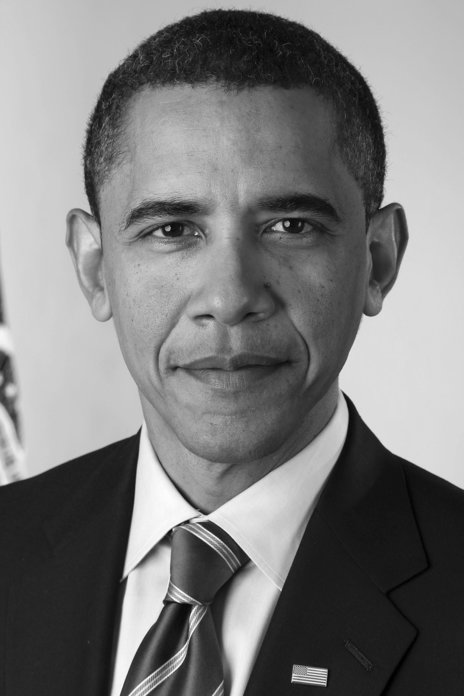
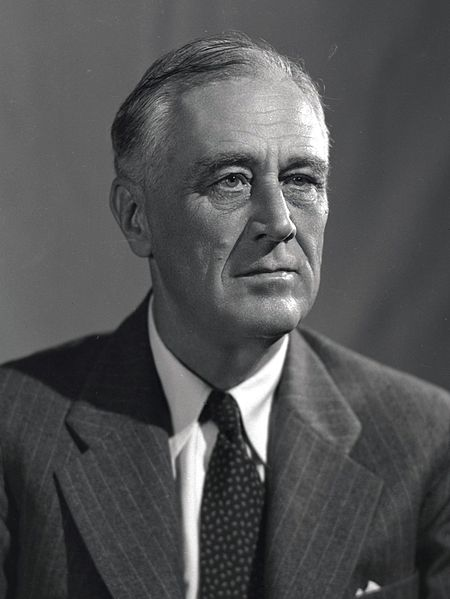
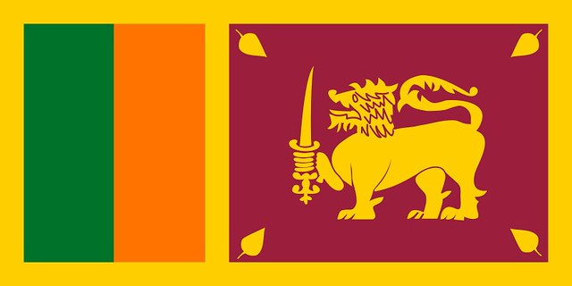

What is poverty
When you think about poverty, what comes to mind? It’s probably an image of a person who doesn’t have enough (good) food to eat, lives in a shabby home—or no home at all. And they probably can’t afford to buy the goods and services you normally take for granted. You’re not wrong, but the complexity of poverty may surprise you.
Poverty is not just about money, but also includes issues of access to services such as health care and education, marginalization and exclusion. Learn about these complexities and how World Vision has been partnering with donors to reduce poverty in the world’s most vulnerable places.

“Foreign Assistance is not an end in itself. The purpose of aid must be to create the conditions where it is no longer needed.”
– President Barack Obama
“As the wealthiest nation on Earth, I believe the United States has a moral obligation to lead the fight against hunger and malnutrition, and to partner with others.”
– President Barack Obama

“We are living in a phenomenal age. If we can spend the early decades of the 21st century finding approaches that meet the needs of the poor in ways that generate profits and recognition for business, we will have found a sustainable way to reduce poverty in the world.”
– Bill Gates

“The test of our progress is not whether we add more to the abundance of those who have much; it is whether we provide enough for those who have too little.”
– President Franklin D. Roosevelt
Poverty state of Sri lanka

Sri Lanka is a pearl-shaped Island nation in South Asia, lying on the Indian Plate, a major tectonic plate that was formerly part of the Indo-Australian Plate. It is in the Indian Ocean southwest of the Bay of Bengal, between latitudes 5° and 10° N, and longitudes 79° and 82° E. Sri Lanka is separated from the mainland portion of the Indian subcontinent by the Gulf of Mannar and Palk Strait.
According to Hindu mythology, a land bridge existed between the Indian mainland and Sri Lanka. It now amounts to only a chain of limestone shoals remaining above sea level. Legends claim that it was passable on foot up to 1480 CE, until cyclones deepened the channel. Portions are still as shallow as 1 metre (3 ft), hindering navigation.[150] The island consists mostly of flat to rolling coastal plains, with mountains rising only in the south-central part. The highest point is Pidurutalagala, reaching 2,524 metres (8,281 ft) above sea level. Sri Lanka has 103 rivers. The longest of these is the Mahaweli River, extending 335 kilometres (208 mi). These waterways give rise to 51 natural waterfalls of 10 metres (33 ft) or more. The highest is Bambarakanda Falls, with a height of 263 metres (863 ft).[152] Sri Lanka's coastline is 1,585 km (985 mi) long. Sri Lanka claims an exclusive economic zone extending 200 nautical miles, which is approximately 6.7 times Sri Lanka's land area. The coastline and adjacent waters support highly productive marine ecosystems such as fringing coral reefs and shallow beds of coastal and estuarine seagrasses. Sri Lanka has 45 estuaries and 40 lagoons. Sri Lanka's mangrove ecosystem spans over 7,000 hectares and played a vital role in buffering the force of the waves in the 2004 Indian Ocean tsunami. The island is rich in minerals such as ilmenite, feldspar, graphite, silica, kaolin, mica and thorium. Existence of petroleum and gas in the Gulf of Mannar has also been confirmed, and the extraction of recoverable quantities is underway.Read more.